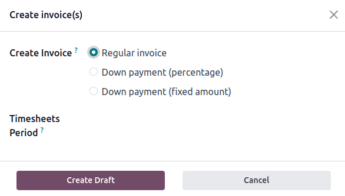

RST cheat sheet¶
Headings¶
===), write as many symbols (=) as there are characters in
the header.Heading size |
Formatting |
|---|---|
H1 |
=======
Heading
=======
|
H2 |
Heading
=======
|
H3 |
Heading
-------
|
H4 |
Heading
~~~~~~~
|
H5 |
Heading
*******
|
H6 |
Heading
^^^^^^^
|
重要
Each document must have exactly one H1 heading. No less, no more.
Markups¶
Emphasis (italic)¶
To emphasize a part of the text. The text is rendered in italic.
Fill out the information before saving the form. |
Fill out the information *before* saving the form.
|
Strong emphasis (bold)¶
To emphasize a part of the text. The text is rendered in bold.
A subdomain is a domain that is a part of another domain. |
A **subdomain** is a domain that is a part of another domain.
|
Technical term (literal)¶
To write a technical term or a specific value to insert. The text is rendered in literal.
Insert the IP address of your printer, for example, |
Insert the IP address of your printer, for example, `192.168.1.25`.
|
Definitions¶
Use the dfn markup to define a term.
The documentation is written in RST and needs to be built (converted to HTML) to display nicely. |
The documentation is written in RST and needs to be built (:dfn:`converted to HTML`) to display
nicely.
|
Abbreviations¶
Use the abbr markup to write a self-defining abbreviation that is displayed as a tooltip.
Odoo uses OCR and artificial intelligence technologies to recognize the content of the documents. |
Odoo uses :abbr:`OCR (optical character recognition)` and artificial intelligence technologies to
recognize the content of the documents.
|
GUI element¶
Use the guilabel markup to identify any text of the interactive user interface (e.g., button
labels, view titles, field names, lists items, ...).
Update your credentials, then click on Save. |
Update your credentials, then click on :guilabel:`Save`.
|
File¶
Use the file markup to indicate a file path or name.
Create redirections with the |
Create redirections with the :file:`redirects.txt` file at the root of the repository.
|
Command¶
Use the command markup to highlight a command.
Run the command make clean html to delete existing built files and build the documentation to HTML. |
Run the command :command:`make clean html` to delete existing built files and build the
documentation to HTML.
|
Lists¶
Bulleted list¶
|
- This is a bulleted list.
- It has two items, the second
item uses two lines.
|
Numbered list¶
|
#. This is a numbered list.
#. Numbering is automatic.
|
|
6. Use this format to start the numbering
with a number other than one.
#. The numbering is automatic from there.
|
ちなみに
Prefer the use of autonumbered lists with #. for better code resilience.
Nested lists¶
|
- This is the first item of a bulleted list.
#. It has a nested numbered list
#. with two items.
|
Hyperlinks¶
External hyperlinks¶
External hyperlinks are links to a URL with a custom label. They follow this syntax:
`label <URL>`_
注釈
The URL can be a relative path to a file within the documentation.
Use the documentation pages hyperlinks if you target another documentation page.
For instance, this is an external hyperlink to Odoo's website. |
For instance, `this is an external hyperlink to Odoo's website <https://www.odoo.com>`_.
|
External hyperlink aliases¶
.. _target: URLtarget_creates a hyperlink with the target name as label and the URL as reference. Note that the_moved after the target!`label <target_>`_does exactly what you expect: the label replaces the name of the target, and the target is replaced by the URL.
A proof-of-concept is a simplified version, a prototype of what is expected to agree on the main lines of expected changes. PoC is a common abbreviation. |
.. _proof-of-concept: https://en.wikipedia.org/wiki/Proof_of_concept
A proof-of-concept_ is a simplified version, a prototype of what is expected to agree on the main
lines of expected changes. `PoC <proof-of-concept_>`_ is a common abbreviation.
|
Custom anchors¶
Custom anchors follow the same syntax as external hyperlink aliases but without any URL. Indeed, they are internal. They allow referencing a specific part of a document by using the target as an anchor. When the user clicks on the reference, the documentation scrolls to the part of the page containing the anchor.
.. _target:ref markup::ref:`target`creates a hyperlink to the anchor with the heading defined below as label.:ref:`label <target>`creates a hyperlink to the anchor with the given label.
See Use relative links for internal URLs to learn how to write proper relative links for internal references.
注釈
Custom anchors can be referenced from other files than the ones in which they are defined.
Notice that there is no
_at the end, contrary to what is done with external hyperlinks.
This can easily be done by creating a new product, see How to create a product? for additional help. How to create a product? As explained at the start of the page, ... |
.. _sales/quotation/start-of-page:
This can easily be done by creating a new product, see :ref:`product` for additional help.
.. _sales/quotation/product:
How to create a product?
========================
As explained at the :ref:`start of the page <sales/quotation/start-of-page>`, ...
|
Documentation pages hyperlinks¶
doc markup allows referencing a documentation page wherever it is in the file tree through
a relative file path.:doc:`path_to_doc_page`creates a hyperlink to the documentation page with the title of the page as label.:doc:`label <path_to_doc_page>`creates a hyperlink to the documentation page with the given label.
Please refer to this documentation and to Send a pro-forma invoice. |
Please refer to :doc:`this documentation <customer_invoices>` and to
:doc:`../sales/sales/invoicing/proforma`.
|
File download hyperlinks¶
The download markup allows referencing files (that are not necessarily RST documents) within the source tree to be downloaded.
Download this module structure template to start building your module in no time. |
Download this :download:`module structure template <extras/my_module.zip>` to start building your
module in no time.
|
Images¶
The image markup allows inserting images in a document.
|  |
.. image:: rst_cheat_sheet/create-invoice.png
:align: center
:alt: Create an invoice.
|
ちなみに
Add the :class: o-no-modal option to an image to
prevent opening it in a modal.
Alert blocks (admonitions)¶
Seealso¶
.. seealso::
- :doc:`customer_invoices`
- `Pro-forma invoices <../sales/sales/invoicing/proforma.html#activate-the-feature>`_
|
Note¶
注釈 Use this alert block to grab the reader's attention about additional information. |
.. note::
Use this alert block to grab the reader's attention about additional information.
|
Tip¶
ちなみに Use this alert block to inform the reader about a useful trick that requires an action. |
.. tip::
Use this alert block to inform the reader about a useful trick that requires an action.
|
Example¶
Example Use this alert block to show an example. |
.. example::
Use this alert block to show an example.
|
Exercise¶
Exercise Use this alert block to suggest an exercise to the reader. |
.. exercise::
Use this alert block to suggest an exercise to the reader.
|
Important¶
重要 Use this alert block to notify the reader about important information. |
.. important::
Use this alert block to notify the reader about important information.
|
Warning¶
警告 Use this alert block to require the reader to proceed with caution with what is described in the warning. |
.. warning::
Use this alert block to require the reader to proceed with caution with what is described in the
warning.
|
Danger¶
危険 Use this alert block to bring the reader's attention to a serious threat. |
.. danger::
Use this alert block to bring the reader's attention to a serious threat.
|
Custom¶
Title Customize this alert block with a Title of your choice. |
.. admonition:: Title
Customize this alert block with a **Title** of your choice.
|
Tables¶
List tables¶
List tables use two-level bulleted lists to convert data into a table. The first level represents the rows and the second level represents the columns.
|
|||||||||
.. list-table::
:header-rows: 1
:stub-columns: 1
* - Name
- Country
- Favorite colour
* - Raúl
- Montenegro
- Purple
* - Mélanie
- France
- Turquoise
|
Grid tables¶
Grid tables represent the rendered table and are more visual to work with.
|
|||||||||||
+-----------------------+--------------+---------------+
| | Shirts | T-shirts |
+=======================+==============+===============+
| **Available colours** | Purple | Green |
| +--------------+---------------+
| | Turquoise | Orange |
+-----------------------+--------------+---------------+
| **Sleeves length** | Long sleeves | Short sleeves |
+-----------------------+--------------+---------------+
|
ちなみに
Use
=instead of-to define header rows.Remove
-and|separators to merge cells.Make use of this convenient table generator to build your tables. Then, copy-paste the generated formatting into your document.
Code blocks¶
def main():
print("Hello world!")
|
.. code-block:: python
def main():
print("Hello world!")
|
Content tabs¶
注意
The tabs markup may not work well in some situations. In particular:
The tabs' headers cannot be translated.
A tab cannot contain headings.
An alert block cannot contain tabs.
A tab cannot contain custom anchors.
Basic tabs¶
Basic tabs are useful to split the content into multiple options. The tabs markup is used to
define sequence of tabs. Each tab is then defined with the tab markup followed by a label.
Content dedicated to Odoo Online users. Alternative for Odoo.sh users. Third version for On-premise users. |
.. tabs::
.. tab:: Odoo Online
Content dedicated to Odoo Online users.
.. tab:: Odoo.sh
Alternative for Odoo.sh users.
.. tab:: On-premise
Third version for On-premise users.
|
Nested tabs¶
Tabs can be nested inside one another.
The closest star to us. The second closest star to us. The North Star. Orbits the Earth. Orbits Jupiter. |
.. tabs::
.. tab:: Stars
.. tabs::
.. tab:: The Sun
The closest star to us.
.. tab:: Proxima Centauri
The second closest star to us.
.. tab:: Polaris
The North Star.
.. tab:: Moons
.. tabs::
.. tab:: The Moon
Orbits the Earth.
.. tab:: Titan
Orbits Jupiter.
|
Group tabs¶
Group tabs are special tabs that synchronize based on a group label. The last selected group is
remembered and automatically selected when the user returns to the page or visits another page with
the tabs group. The group-tab markup is used to define group tabs.
C++ Python Java int main(const int argc, const char **argv) {
return 0;
}
def main():
return
class Main {
public static void main(String[] args) {}
}
|
.. tabs::
.. group-tab:: C++
C++
.. group-tab:: Python
Python
.. group-tab:: Java
Java
.. tabs::
.. group-tab:: C++
.. code-block:: c++
int main(const int argc, const char **argv) {
return 0;
}
.. group-tab:: Python
.. code-block:: python
def main():
return
.. group-tab:: Java
.. code-block:: java
class Main {
public static void main(String[] args) {}
}
|
Code tabs¶
Code tabs are essentially group tabs that treat the content as a
code block. The code-tab markup is used to define a code tab.
Just as for the code-block markup, the language defines the syntax highlighting of the tab. If
set, the label is used instead of the language for grouping tabs.
#include <iostream>
int main() {
std::cout << "Hello World";
return 0;
}
print("Hello World")
console.log("Hello World");
|
.. tabs::
.. code-tab:: c++ Hello C++
#include <iostream>
int main() {
std::cout << "Hello World";
return 0;
}
.. code-tab:: python Hello Python
print("Hello World")
.. code-tab:: javascript Hello JavaScript
console.log("Hello World");
|
Document metadata¶
:) at the top of the source file.Metadata |
Purpose |
|
Make a toctree page accessible from the navigation menu. |
|
Show the table of content on a page that has the |
|
Show a dynamic side column that can be used to display interactive
tutorials or code excerpts.
For example, see
Accounting cheat sheet.
|
|
Hide the "On this page" sidebar and use full page width for the content. |
|
Link CSS files (comma-separated) to the document. |
|
Link JS files (comma-separated) to the document. |
|
Assign the specified classes to the |
|
Suppress the need to include the document in a toctree. |
|
Exclude the document from search results. |
Formatting tips¶
Break the line but not the paragraph¶
A first long line that you break in two
-> here <- is rendered as a single line.
A second line that follows a line break.
|
| A first long line that you break in two
-> here <- is rendered as a single line.
| A second line that follows a line break.
|
Escape markup symbols (Advanced)¶
Markup symbols escaped with backslashes (\) are rendered normally. For instance, this
\*\*line of text\*\* with \*markup\* symbols is rendered as “this **line of text** with
*markup* symbols”.
When it comes to backticks (`), which are used in many cases such as external hyperlinks, using backslashes for escaping is no longer an option because
the outer backticks interpret enclosed backslashes and thus prevent them from escaping inner
backticks. For instance, `\`this formatting\`` produces an [UNKNOWN NODE title_reference]
error. Instead, ```this formatting``` should be used to produce the following result:
`this formatting`.